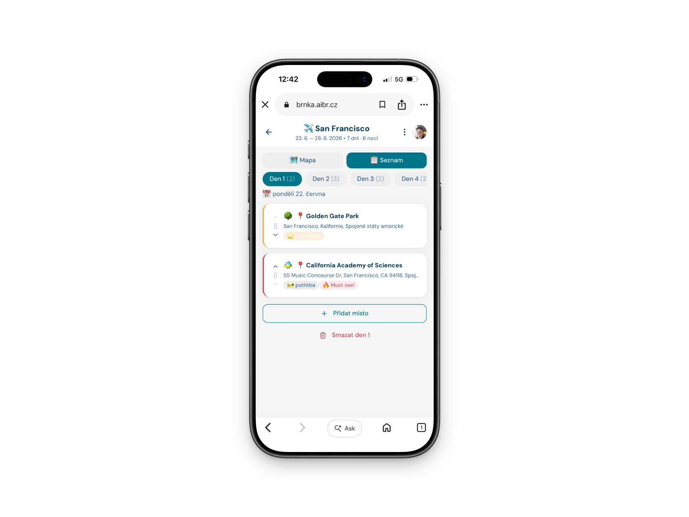
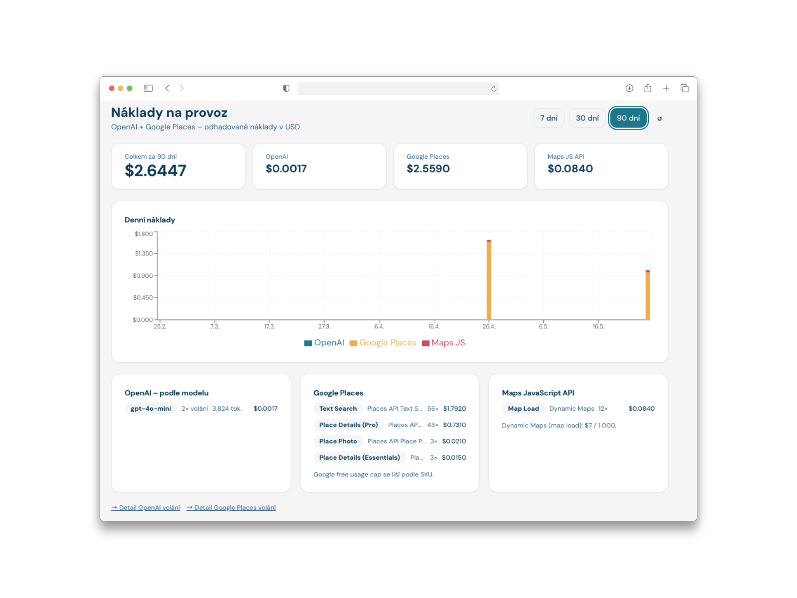
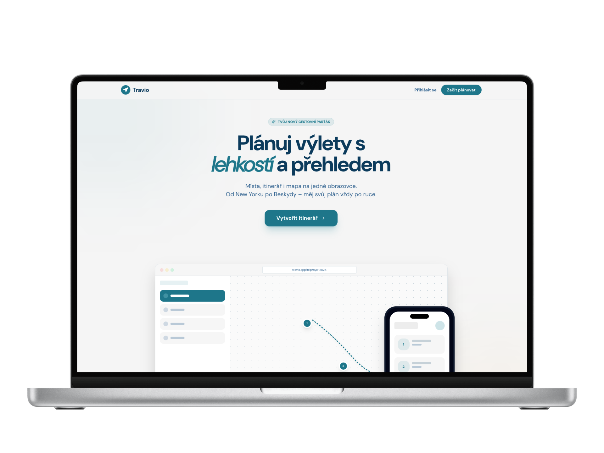

Mobilní-first plánovač cestovních itinerářů s AI asistencí
Autor: Matěj Brnka
Cílový uživatel: cestovatel mladší generace, který chce přehledně naplánovaná místa v dané destinaci — bez žonglování se zápisníky a tabulkami.

| Vrstva | Technologie |
|---|---|
| Frontend | React 18, Vite, TypeScript, Tailwind CSS |
| Backend | NestJS 11, TypeScript, REST API |
| Databáze | Supabase (PostgreSQL) |
| Auth | Supabase Auth – Google OAuth |
| Mapy | Google Maps JS API |
| Deployment | Docker Compose, Traefik (reverse proxy, HTTPS / Let's Encrypt) |
| Služba | Účel | Popis |
|---|---|---|
| OpenAI | Generování itineráře (AI) | Bearer token (`OPENAI_API_KEY`) |
| Google Places API | Vyhledávání míst, autocomplete, fotky, detaily POI | API key (`GOOGLE_PLACES_API_KEY`) |
| *Google Maps JS API | Interaktivní mapa v UI (fullscreen, piny, klikání na POI) | API key (`VITE_GOOGLE_MAPS_KEY`) |
| Supabase | PostgreSQL databáze + Auth (Google OAuth, JWT) | API key (`VITE_GOOGLE_MAPS_KEY`) |
| yr.no (MET NORWAY) | Předpověď počasí pro termín cesty (do 9 dní) | User-Agent header |
| Open-Meteo | Historická data počasí (stejné datum, minulý rok) – fallback pro delší cesty | bez autentizace |
OpenAI GPT-4o-mini — výchozí model, konfigurovatelné přes env
OPENAI_MODEL=gpt-4o-mini
OPENAI_TEMPERATURE=0.7
OPENAI_MAX_TOKENS=2000
googlePlaceId — aplikace se zeptá před přidáním podruhédestinations JSONB, migrace 004Díky za pozornost
